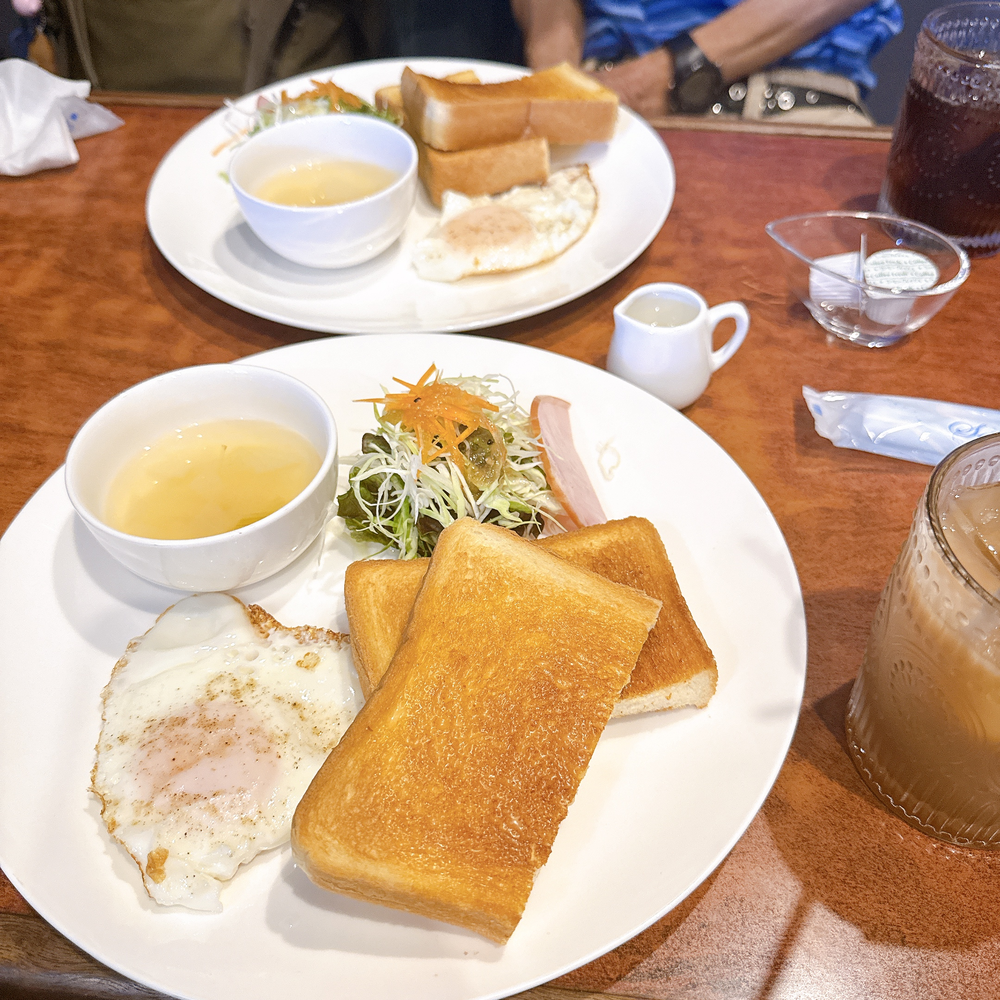
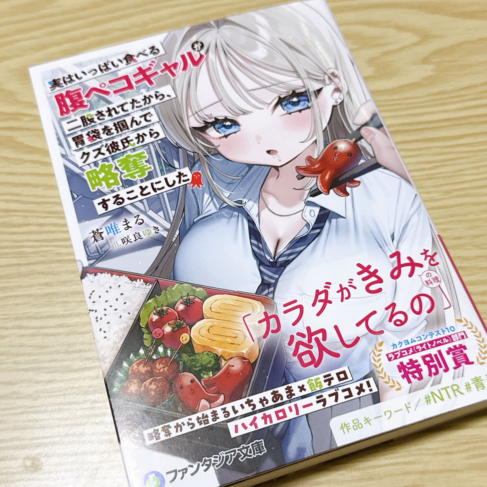
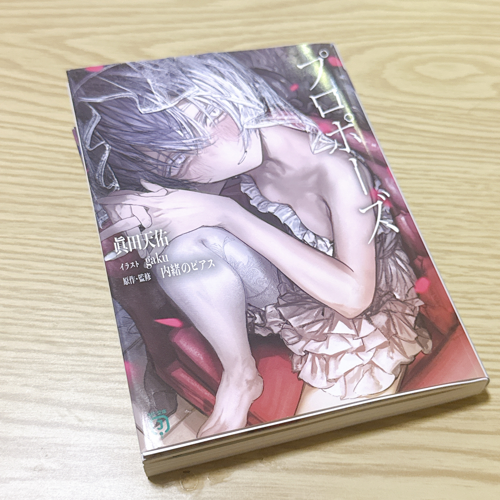

私は現在、グラフィックデザイナーとして週に数日、アルバイトをしています。
仕事から帰ってきたあとの時間や休日は、特別なことをする日というより、好きなことをゆっくり楽しむ時間にしています。
朝は少しだけゆっくり起きて、カフェオレを飲みながら「今日は何をしようかな」と考える時間が好きです。
気が向けば父とモーニングへ。

そのあとは、本屋さんやTSUTAYAへ。
新しい漫画や文房具を眺めたり、気になっていたCDを借りたり。
創作をしていると、「この作品、面白そうだな」という何気ない出会いが、次のアイデアにつながることもあります。
最近出会った作品の中では、『実はいっぱい食べる腹ペコギャルが二股されてたから、胃袋を掴んでクズ彼氏から略奪することにした』がとても面白かったです。
タイトルだけを見ると略奪系のお話なのかな？と思ったのですが、実際はいい意味で王道の純愛ラブコメでした。登場人物もみんな魅力的で、思わず一気に読んでしまいました。おすすめです。

こちらはまだ読み始めたばかりですが、歌い手や天使、悪魔、アルビノの少女など、気になるキーワードがたくさん登場する作品です。
これから読むのが楽しみです。

案外、こういう何気ない時間にキャラクター同士の会話や物語のアイデアがふっと思い浮かぶことが多いんです。
最近はコーディングをしたり、イラストを描いたり、『アッシュ・ジャーニー』の続きを考えたりする時間も増えました。
休みの日だからこそ、締め切りを気にせず、「描きたいから描く」「作りたいから作る」という時間を大切にしています。
夜は好きな音楽を流しながら、一日の終わりに一服。
そんな穏やかな休日が、最近はいちばん好きです。